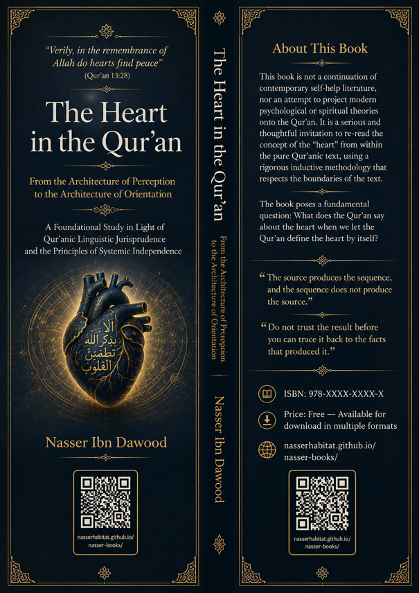

Nasser Ibn Dawood

Text extracted from the author-supplied Word edition; consult the original source.
Preparing the reader…
The Heart in the Qur'an
From the Architecture of Perception to the Architecture of Orientation
A Foundational Study in Light of the Linguistic Jurisprudence of the Qur'an and the Principles of Systemic Independence
English Edition – Condensed Conceptual Adaptation
I. The Global Knowledge Manifesto
Knowledge is a universal right. The author firmly believes that wisdom should not be locked behind paywalls or language barriers.
Global Access Policy: All books in this library are available for free in multiple digital formats (PDF, HTML, DOCX, TXT).
The Digital Library: As of early 2026, the collection hosts 68 volumes (34 in Arabic and 34 in English), fully optimized for AI-assisted research and digital archiving.
Official Platforms:
Main Website: nasserhabitat.github.io/nasser-books/
GitHub: nasserhabitat/nasser-books
II. Translator's Note: The Bridge of Meaning
This English edition is a condensed conceptual adaptation. It is not a word-for-word translation, but rather an "extraction of essence." It presents the core philosophical framework in accessible English, omitting the exhaustive linguistic debates and classical references found in the original Arabic text.
For the academic researcher: The original Arabic version remains the primary source for comprehensive linguistic analysis, detailed exegesis (Tafsir), and the complete bibliography.
III. Why This Book?
This book is not a continuation of contemporary self-help literature, nor an attempt to project modern psychological or spiritual theories onto the Qur'an. It does not begin with a preconceived definition of the "heart" and then search for verses that confirm it. Rather, it starts from a more fundamental question:
What does the Qur'an say about the heart when we let the Qur'an define the heart by itself?
This question may seem like a limited linguistic inquiry, but it opens onto a broader epistemological problem: the concept of the heart in modern consciousness is no longer a purely Qur'anic concept. Layers of medical, psychological, mystical, philosophical, and developmental meanings have accumulated around it, making it difficult to distinguish between what the Qur'an actually says, what tradition has said about it, what modern culture has added, and what has become "truth" merely through repetition.
Hence the necessity of returning to a methodological zero point: not to ask first what we know about the heart, then search for verses that support it; but to ask what the Qur'anic system says about the heart, and then let the results of induction take shape gradually.
The Qur'an does not present the heart in a single place or through a direct definition, but distributes it across a wide network of functions, states, and relationships. The heart comprehends, understands, remembers, humbles itself, and finds peace. It is also described as sound, diseased, hardened, sealed, stamped, deviant, heedless, and repentant. This diversity is not merely a list of adjacent attributes, but raw material for a deeper question:
What is the structure that allows the heart to perform these functions and to move between these states?
Therefore, this book does not treat the "heart" as an isolated word for which a synonym should be found, but as a node within a Qur'anic semantic network. The goal is not to say that the heart means such-and-such, but to discover how the concept operates within the system: What is it associated with? How is it described? What functions are attributed to it? What states can it undergo? What is its relationship to revelation, guidance, response, rejection, repentance, deviation, contentment, tranquility, and behavior?
This is the difference between searching for the "meaning of a word" and searching for the "structure of a concept."
IV. The Central Problem
The central problem this book poses is:
How does the Qur'an present the "heart" within a network of functions, states, and relationships that make it a central element in human orientation, without projecting modern psychological concepts or foreign energetic and philosophical models onto it?
From this central problem, several deeper questions branch:
If the Qur'an makes the heart the locus of comprehension, understanding, remembrance, humility, and tranquility, does this indicate that the heart in the Qur'anic lexicon is primarily a cognitive concept? Or do these functions reveal only one aspect of a broader structure?
And if the heart is simultaneously described as sound, diseased, hardened, sealed, stamped, deviant, heedless, and repentant, are we facing different "states" of a single structure? Or are we facing multiple semantic uses that cannot be brought together under a single model before induction is complete?
And if relationships appear in the text between revelation, the heart, response, contentment, tranquility, and behavior, do these relationships reveal an operational sequence? Or are they a network of intersecting concepts that cannot be converted into a causal line merely because they appear together?
These questions make the subject of the heart transcend lexical inquiry to structural inquiry. The problem is not that people do not know the meaning of the word "heart," but that the concept itself has undergone, throughout history, processes of reduction, redefinition, and projection, to the point where it has become necessary to reconstruct its boundaries from within the text.
V. Why the Heart?
The preliminary induction of Qur'anic discourse raises a question that should not be passed over quickly: Why did the Qur'an make the "heart" the locus of a number of cognitive and perceptual functions, and not make "the intellect" a central term in the later technical sense that became established in philosophical and theological discourses?